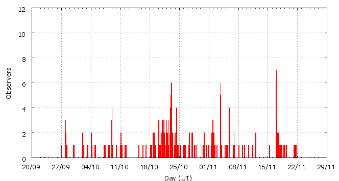

This page shows automated results of the Northern-Taurids 2008, based on visual data entered through the IMO electronic report form. Send your feedback regarding this page to Geert Barentsen or visit the project pages. Note that these automated results may not be suitable for scientific use!
Page generated: 2008 December 9 at 2:27 UT.
ZHRmax = 8 based on 493 Northern-Taurids in 596 data intervals, assuming fixed population index r = 2.3 and zenith correction 1/sin(hR).

| Time (UT) | Solarlon | nINT | nNTA | ZHR | |
|---|---|---|---|---|---|
| 2008-09-27 23:00 | 185.078 | 29 | 9 | 2 | +-1 |
| 2008-09-29 22:48 | 187.035 | 7 | 24 | 7 | +-1 |
| 2008-10-02 14:09 | 189.631 | 13 | 7 | 1 | +-0 |
| 2008-10-04 06:53 | 191.303 | 12 | 15 | 2 | +-0 |
| 2008-10-08 06:01 | 195.213 | 18 | 19 | 2 | +-0 |
| 2008-10-11 02:29 | 198.031 | 22 | 6 | 1 | +-0 |
| 2008-10-12 06:17 | 199.177 | 4 | 3 | 2 | +-1 |
| 2008-10-16 20:49 | 203.739 | 10 | 0 | 1 | +-1 |
| 2008-10-19 07:48 | 206.178 | 33 | 10 | 2 | +-1 |
| 2008-10-20 19:13 | 207.645 | 59 | 31 | 2 | +-0 |
| 2008-10-22 02:07 | 208.925 | 26 | 30 | 3 | +-1 |
| 2008-10-22 22:57 | 209.789 | 43 | 30 | 3 | +-1 |
| 2008-10-23 05:02 | 210.042 | 58 | 30 | 3 | +-1 |
| 2008-10-24 02:29 | 210.932 | 40 | 30 | 2 | +-0 |
| 2008-10-25 15:48 | 212.482 | 17 | 17 | 2 | +-0 |
| 2008-10-28 01:14 | 214.870 | 40 | 15 | 2 | +-0 |
| 2008-10-31 02:54 | 217.938 | 15 | 28 | 3 | +-1 |
| 2008-11-01 20:49 | 219.687 | 11 | 33 | 4 | +-1 |
| 2008-11-02 17:43 | 220.558 | 15 | 30 | 4 | +-1 |
| 2008-11-03 19:39 | 221.641 | 7 | 31 | 8 | +-1 |
| 2008-11-05 05:40 | 223.062 | 16 | 30 | 4 | +-1 |
| 2008-11-06 15:10 | 224.462 | 7 | 18 | 5 | +-1 |
| 2008-11-08 18:37 | 226.613 | 12 | 10 | 3 | +-1 |
| 2008-11-11 19:57 | 229.683 | 17 | 8 | 4 | +-1 |
| 2008-11-17 00:08 | 234.893 | 50 | 17 | 4 | +-1 |
| 2008-11-18 14:53 | 236.521 | 8 | 6 | 5 | +-2 |
| 2008-11-21 10:46 | 239.376 | 7 | 6 | 2 | +-1 |
For each estimation interval: time is the middle of the interval, nINT is the number of observing periods and nNTA is the number of Northern-Taurids involved. ZHR = (1 + sum nNTA) / sum(Teff/C) where Teff is the effective observing time and C is the total correction for limiting magnitude, clouds and zenith correction. The solar longitudes refer to equinox J2000.0.
Data has been received from 49 observers in 20 countries. Thank you for your efforts!

| Observer | Country | Teff | nNTA |
|---|---|---|---|
| Salvador Aguirre | Mexico | 42.90h | 31 |
| Pierre Bader | Germany | 6.80h | 7 |
| Geoff Carstairs | Australia | 0.75h | 0 |
| Ameya Deshpande | India | 1.50h | 2 |
| Ameya Deshpande | India | 3.00h | 3 |
| Mayuresh Desai | India | 3.00h | 5 |
| Mayuresh Desai | India | 3.00h | 4 |
| Sietse Dijkstra | Netherlands | 17.31h | 21 |
| Todor Dimitrov | Bulgaria | 9.91h | 10 |
| Jaroslaw Dygos | Poland | 0.83h | 1 |
| Wei Ge | China | 0.67h | 0 |
| William Godley | United States | 7.84h | 6 |
| Mitja Govedic | Slovenia | 4.13h | 18 |
| Valentin Grigore | Romania | 4.86h | 6 |
| Wayne T. Hally | United States | 43.97h | 34 |
| Vilem Heblik | Czech Republic | 5.42h | 10 |
| Carl Hergenrother | United States | 1.54h | 0 |
| Kamil Hornoch | Czech Republic | 8.73h | 17 |
| Petr Horalek | Czech Republic | 0.97h | 2 |
| Carl Johannink | Netherlands | 3.70h | 4 |
| Javor Kac | Slovenia | 6.88h | 19 |
| Jakub Koukal | Czech Republic | 7.00h | 24 |
| Jens Lacorne | France | 2.14h | 0 |
| Peter Van Leuteren | Netherlands | 20.43h | 18 |
| Jer Nan Lou | Taiwan | 2.00h | 1 |
| Jer Nan Lou | Taiwan | 1.00h | 1 |
| Adam Marsh | Australia | 2.00h | 4 |
| Grigoris Maravelias | Greece | 0.65h | 1 |
| Pierre Martin | Canada | 5.90h | 12 |
| Bruce Mccurdy | Canada | 3.00h | 6 |
| Mukul Mhaskey | India | 1.50h | 3 |
| Koen Miskotte | Netherlands | 13.97h | 11 |
| Jurgen Rendtel | Germany | 18.67h | 40 |
| Alex Scholten | Netherlands | 2.17h | 2 |
| Rene Scurbecq | Belgium | 3.67h | 10 |
| Nikhil Shewale | India | 3.00h | 3 |
| Rohan Shewale | India | 3.00h | 13 |
| Wesley Stone | United States | 1.96h | 4 |
| Arnold Tukkers | Netherlands | 1.57h | 2 |
| Shigeo Uchiyama | Japan | 2.82h | 3 |
| Michel Vandeputte | Belgium | 35.38h | 37 |
| Valentin Velkov | Bulgaria | 8.55h | 22 |
| Amogh Waghmare | India | 3.00h | 16 |
| William Watson | United States | 3.96h | 2 |
| William Watson | United States | 4.91h | 1 |
| Thomas Weiland | Austria | 30.48h | 57 |
| Lukasz Wozniak | Poland | 4.00h | 0 |
| Weizhou Zeng | China | 1.32h | 2 |
| Desislava Zhivkova | Bulgaria | 3.15h | 3 |
Create your own analysis!
Rate intervals: nta2008_rate.csv (CSV-format).
Magnitude distributions: nta2008_magn.csv (CSV-format).